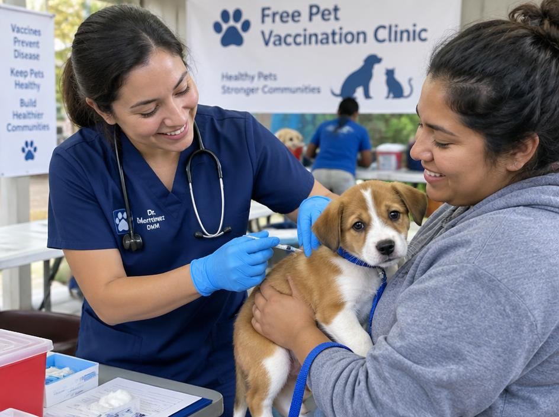
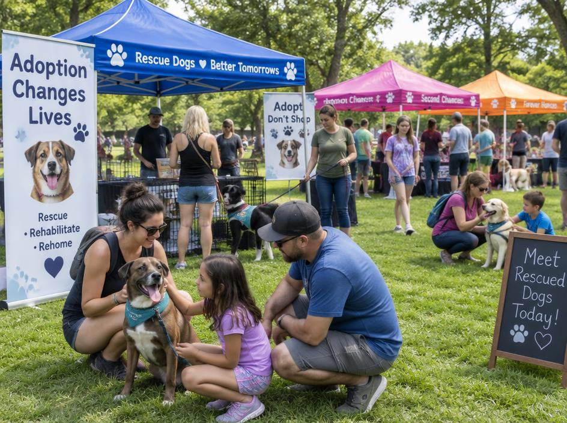
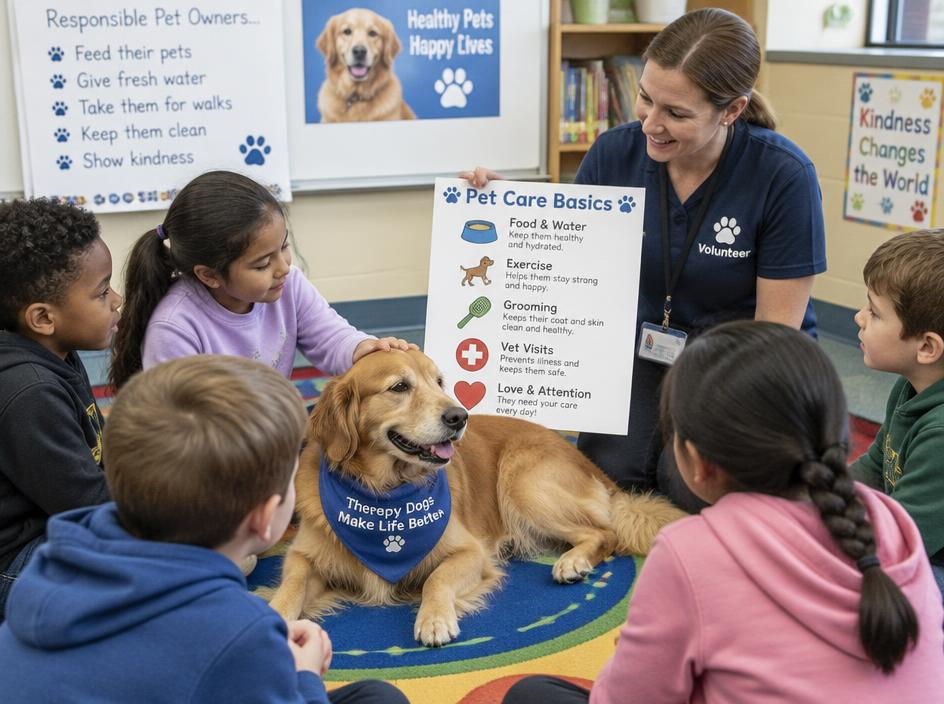

Castra Bairro
Mutirões mensais de castração e vacinação gratuitas para animais de famílias de baixa renda.
Como contribuir: doe ração, divulgue as datas ou ajude na recepção.
Conheça as iniciativas da Patas Unidas e veja como você pode ajudar.

Mutirões mensais de castração e vacinação gratuitas para animais de famílias de baixa renda.
Como contribuir: doe ração, divulgue as datas ou ajude na recepção.

Feiras de adoção aos fins de semana com animais já vacinados, castrados e vermifugados.
Como contribuir: seja lar temporário ou voluntário nas feiras.

Palestras em escolas sobre guarda responsável, respeito aos animais e prevenção do abandono.
Como contribuir: indique uma escola ou participe como palestrante.